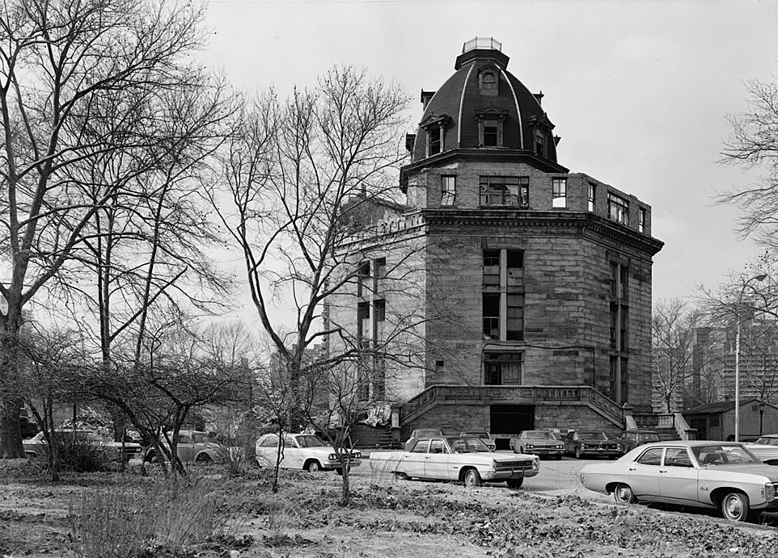
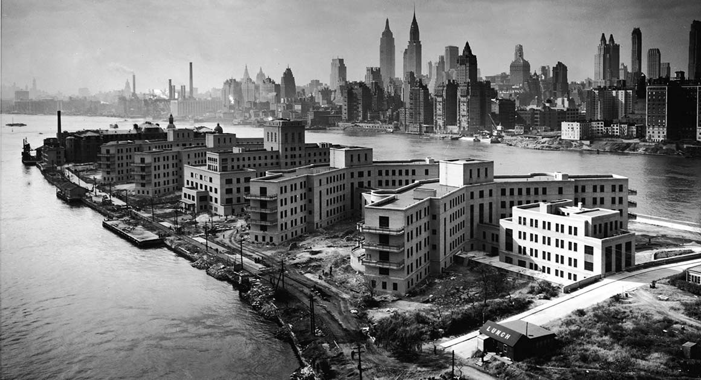
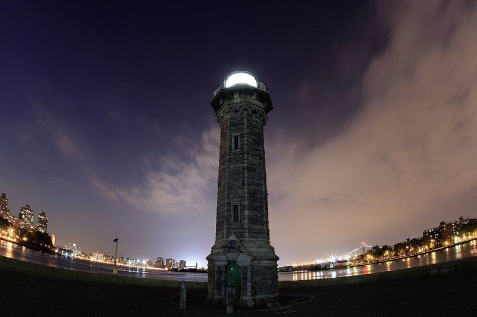
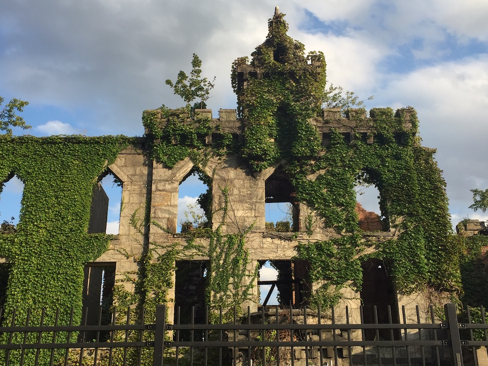
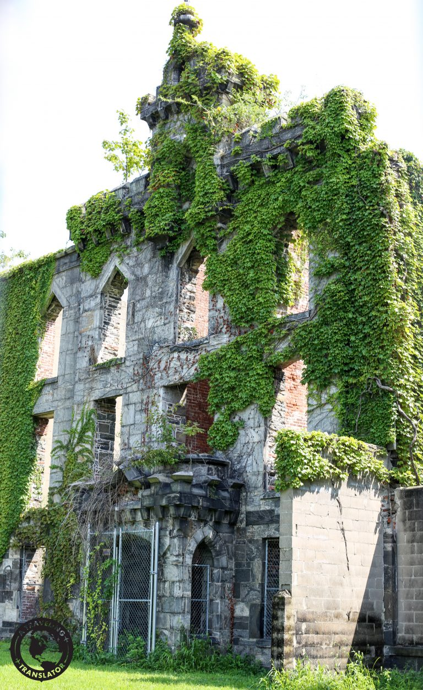

This two-mile-long (3.2 kilometers) stretch of land was once the home of
prisons and insane asylums. Most notoriously, The Octagon was the second building
– and one of the most famous still standing on the island –
that was cleaved into the land. It was erected in 1834 and served
as the main entrance to the New York City Mental Health Hospital aka
the City’s Lunatic Asylum. After conversion to a luxuary rental in 2007,
residents claim that they still hear ghosts and wailing throughout the building.


If you find yourself in Lighthouse Par
at the northeast tip of the
island (about a 20-minute walk from the tram), look out for Blackwell
Island Lighthouse. The 1872-built Gothic Revival structure, which has
the honor of being on the National Register of Historic Places and a
New York City Landmark, used to light a neighboring insane asylum and
now provides a picturesque backdrop for locals.

Roosevelt Island comes with a somewhat spooky backstory, a key point
of which can still be observed—from a distance. Opened in 1856,
the island’s Smallpox Hospital, where patients infected with the
contagious disease were once quarantined, now stands in ruins.
However, the off-limits attraction is still viewable from behind a
fence, with only the colony of feral cats that has taken over the
building allowed to pass.

Works Cited:
The Madness of Roosevelt Island - NY Ghosts. (2020, August 19). NY Ghosts.
https://nyghosts.com/the-madness-of-roosevelt-island/
Goicochea, J. (2018, January 24). The Best Things to See and Do on
Roosevelt Island, NYC. Culture Trip; The Culture Trip.
https://theculturetrip.com/north-america/usa/new-york/articles/best-things-see-roosevelt-island-nyc/
PLAN
YOUR
VIST